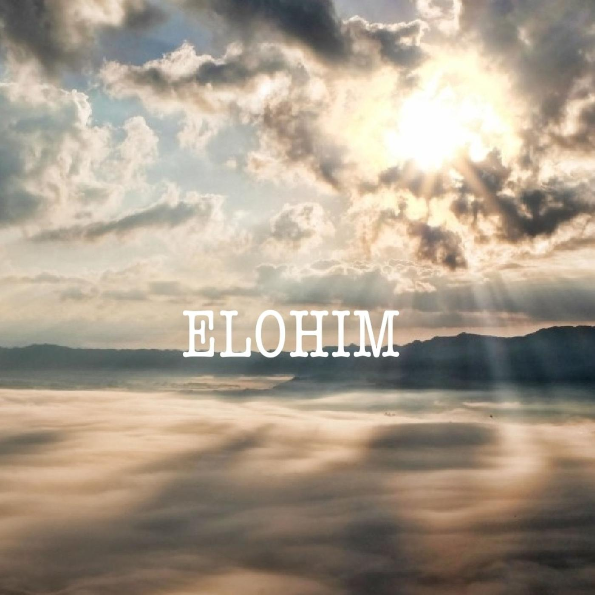

Ejercicio 1: Menú Hamburguesa
Para este primer ejercicio vamos a diseñar el contenido HTML de nuestra página web de ejercicios del DOM y convertir su contenido en un menú hamburguesa "dinámico" para su fácil navegación.

Toda la Honra y la Gloria sean para YHWH Zevaot (YHWH de los Ejércitos).
Ejercicio 2: Reloj Digital y Alarma Sonora
Para este ejercicio se elaborará un reloj digital que se mostrará en pantalla cuando lo indiquemos y se ocultará cuando lo indiquemos. De igual forma tendremos una alarma sonora que se activará al pulsar el botón correspondiente y se cancelará con otro botón.

El Eterno YHWH creo el tiempo y el espacio en el que vivimos y por su compasión vivimos y respiramos.
¡Bendito y Exaltado sea Su Nombre por siempre. Omen!
Ejercicio 3: Eventos del Teclado
En este ejercicio se trabajarán los eventos del teclado para desencadenar una aplicación que mueva un elemento circular sobre un plano negro usando las flechas de desplazamiento del teclado; Izquierda (⬅), arriba (⬆), derecha (➡) y abajo (⬇).
Si presionas las teclas "Alt + A" accederás a un mensaje de alerta, si presionas "Alt + C" accederás a una ventana de confirmación y si presionas "Alt + P" saldrá una ventana tipo prompt para ingresar un valor.

El movimiento es imprescindible para la vida y el Eterno nos hizo para ser seres dinámicos y activos, gozando de sus bendiciones en santidad y justicia.
Ejercicio 4: Cuenta Regresiva

El Shabbat y las fiestas son un mandamiento, una señal y un pacto de nuestro Elohim YHWH con su pueblo escogido, son días muy especiales para compartir y bendecir, además conmemoramos las grandes obras de nuestro Abba al haber creado todo lo que conocemos y damos Gloria a Su Nombre y decimos "Todah Raba Abba Kadosh".
Ejercicio 5: Botón Scroll Arriba
Para este ejercicio elaboraremos un botón que detecte cuando nos hayamos desplazado hacia bajo en la ventana de navegación y nos permita regresar al inicio al pulsarlo.
Pulse el botón ^, ubicado en la parte inferior derecha de la ventana junto al botón menú, para regresar al inicio.

En Su Torah el Eterno siempre nos invita a retornar al buen camino, a volvernos a √âl, a iniciar una nueva vida alejada del pecado y cumpliendo Su Torah con todo nuestro üíñ, con toda nuestra alma y con todas nuestras üí™; lo cual es nuestro culto racional y con un verdadero prop√≥sito.
¡Exaltado sea el Abba Kadosh (Padre Santo)!
Ejercicio 6: Botón Temas
En este ejercicio vamos a crear un botón que nos permita alternar entre un tema claro y uno oscuro, lo cual es muy usado por los usurios hoy en día. Aplicando los métodos ya conocidos para modificar, agregar y remover atributos y preopiedades CSS desde el archivo JavaScript.
Para Cambiar el tema presione en el bot√≥n üåô ubicado en la parte inferior izquierda para probar esta ingeniosa herramienta y cambiar el tema claro por un tema oscuro.

El Eterno en su eterna Sabidur√≠a y Compasi√≥n hizo las dos grandes lumbreras del cielo, el ‚òÄÔ∏è para que se√±oreará el d√≠a y la üåô para que se√±oreará la noche demostrando Su gran Poder y Gloria, ¡HalleluYah!.
Ejercicio 7: Local Storage
Este ejercicio esta relacionado con el ejercicio anterior y lo que busca es permitir al usuario conservar el tema de mayor agrado para posteriores visitas a nuestro sitio web, mejorando su experiencia y estableciendo parámetros definidos por él. Para este fin haremos uso de la herramienta Local Storage de windows que permite almacenar variables en el navegador y ser invocadas cuando estas se requieran. Siempre y cuando se haga la conexión desde el mismo dispositivo.
Presiona el bot√≥n üåô y seguidamente actualiza üîÑ el navegador o cierra la ventana ‚ùå y vuelve a abrirla y notarás que los cambios realizados en el tema se conservan de acuerdo a la última visita.

En las Escrituras dice: "ante toda cosa guardada, guarda tu corazón, porque de él mana la Vida". Es decir, si retenemos y conservamos las enseñanzas de la Torah (Instrucción de vida) en nuestras mentes y nuestros corazones seremos verdaderamente sabios y conoceremos (tener comunión íntima) al Elohim de Israel.
¡YHWH es Su Nombre!
Ejercicio 8: Reponsive con JavaScript
Para este ejercicio debemos usar el modo responsive para que el contenido de el video y el mapa de abajo se visualicen en iframes y a partir de resoluciones menores a 600 pixeles se visualicen en forma de anclas o links con el fin de garantizar una interfaz mas simple y que ahorre en consumo de datos.

No importa de que pueblo seamos, todos debemos llevar la TORAH en nuestros corazones.
Ejercicio 9: Responsive Tester
En este ejercicio abriremos una ventana con la altura y el ancho indicados por el usuario para realizar una prueba responsive de una determinada página web
Complete los campos requeridos para abrir una nueva ventana con los valores indicados

"Porque no es justo delante de Elohim quien oye la Torah, sino aquel que oyéndola la lleva por obra"
Ejercicio 10: Detección de Dispositivos (User Agent)
En este ejercicio más que un reto es conocer y explorar el objeto navigator de window ya que en este encontramos información muy importante sobre el dispositivo del cual se conecta nuestro usuario.
El origen, ¿de dónde venimos y hacia dónde vamos? es importante saberlo y como dice el proverbio,
"EL fin de todo discurso es este; Teme a Elohim YHWH y guarda Su Torah, porque esto es el TODO del hombre"
Ejercicio 11: Detección de la Conexión
En este ejercicio la finalidad es programar un mensaje que aparezca cuando se pierda la conexión a internet y otro mensaje cuando se restablezca la conexión para mantener informado al usuario de su estado de conexión.
La Torah dice: "El Poder invisible de nuestro Elohim, se hace claramente visible en su creación", entonces busquemos con todo nuestro corazón, alma y ser, tener comunión con Él para tener bendeción de Su parte.
Ejercicio 12: Detección de Cámara Web
Para este ejercicio se usará el objeto navigator con su propiedad mediaDevices para detectar dispositivos de audio y video conectados al PC y por medio del método getUserMedia capturar la salida de dichos dispositivos en la ventana del navegador, similar a lo que hacen las aplicaciones de Teams, Zoom y Meet.

El día que el Eterno decida juzgar a todas las naciones, se abrirán los libros de los Cielos y en ellos estarán grabadas todas las obras que hicimos en vida, será como ver una película de nuestras vidas y no habrá justificación alguna para ocultar las injusticias y será manifiesta la Justicia Verdadera de nuestro Creador YHWH.
Ejercicio 13: Geolocalización
En este ejercicio usaremos la propiedad y m√©todos de geolocation para poder acceder a la ubicaci√≥n de tu dispositivo por lo cual debes permitir a esta página acceder a dicha informaci√≥n cuando te lo pida üòä.
¿Por qué "Elohim"?, la Naturaleza Divina del Eterno esta basada en atributos (Elohim) entre los cuales podemos mencionar Su Omniprescencia (Su Presencia esta en todos lados), Su Omniciencia (Conocimiento Absoluto; Todo lo sabe) y Su Omnipotencia (Poder Absoluto; Tiene todo el Poder).
A Él sea toda la Honra, toda la Gloria y todo el Poder por la eternidad ¡omén!.